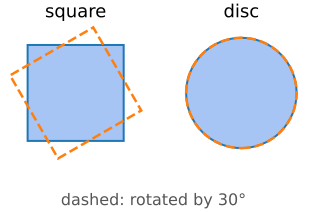
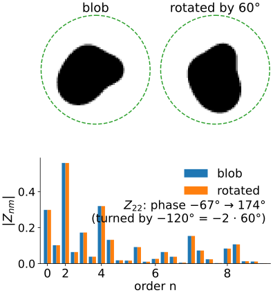
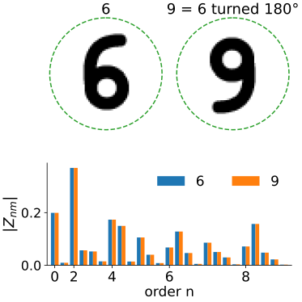
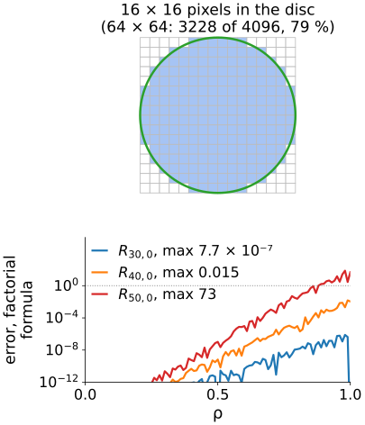
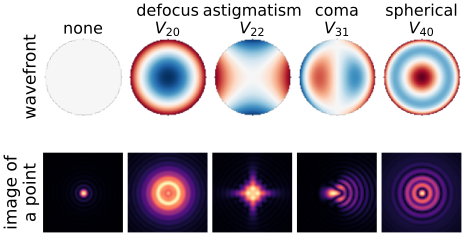

Rotation is natural in polar coordinates(\rho, \theta): turning the image by \alpha is the shift \theta \to \theta + \alpha.
A function of \theta on a circle has a Fourier series\sum_m c_m e^{im\theta}; a shift multiplies each term by a phase e^{im\alpha} and leaves its size alone (the shift theorem of the Fourier unit).
A square is not rotation symmetric: rotating the image moves its corners in and out of the square, and Legendre moments of a rotated image are complicated mixtures of the original ones.
So: build a basis on the unit disc whose angular part is e^{im\theta}.

Zernike polynomials
V_{nm}(\rho, \theta) = R_{nm}(\rho)\, e^{im\theta}, \qquad n \ge 0,\ |m| \le n,\ n - |m| \text{ even}.
m: how many times the pattern repeats around the circle (the angular frequency).
n: the degree of the radial polynomial; R_{nm} has (n - |m|)/2 zeros inside the disc.
Radial part, same m: \int_0^1 R_{nm} R_{n'm}\,\rho\,d\rho = \frac{1}{2(n+1)}\delta_{nn'}, orthogonal with the weight \rho (the area element of polar coordinates). Example: \int_0^1 (2\rho^2 - 1)\cdot 1 \cdot \rho\,d\rho = \tfrac12 - \tfrac12 = 0.
Complex numbers; for a real image Z_{n,-m} = \overline{Z_{nm}}, so only m \ge 0 is needed: up to order N there are (N+2)^2/4 of them for even N (9 at N = 4, 121 at N = 20), the same (N+1)(N+2)/2real numbers as before.
Reconstruction exactly as with Legendre: \hat I_N = \sum_{n \le N}\sum_m Z_{nm} V_{nm}, the orthogonal projection onto the polynomials of degree \le N on the disc.
The image must be centred on the disc: put the disc’s centre at the centroid and choose its radius from m_{00} or the farthest object pixel. That makes the moments translation and scale invariant.
Rotation: only the phase turns
Rotate the image by \alpha (counter-clockwise). Every pixel moves from angle \theta to \theta + \alpha, and
Z_{nm} \;\to\; Z_{nm}\, e^{-im\alpha}.
|Z_{nm}| does not change: a rotation-invariant feature for every (n, m).
The phase turns by -m\alpha: m times as fast as the image. Z_{n0} is real and does not turn at all.
The same story as the complex moments c_{pq} of the invariants unit: each Z_{nm} is a combination of the c_{pq} with |p - q| = m. Zernike moments are those invariants written in an orthogonal basis, so each one carries new information.

The math: rotation and the link to complex moments
with \beta_{nmk} the coefficients of R_{nm}. Example: Z_{11} = \frac2\pi c_{01} = \frac2\pi(m_{10} - i\,m_{01}): proportional to the centroid’s offset from the disc centre.
Try it: rotate, and compare |Z_{nm}|
What the magnitudes lose
The phase: a shape and its rotated copy have the same |Z_{nm}|. So do 6 and 9, M and W, a b and a q.
Mirror images: a reflection conjugates every Z_{nm} (up to a sign (-1)^m for a left–right mirror), so the magnitudes are the same: b and d too.
Choose the invariance the task needs, not the most: to tell 6 from 9, keep a phase (e.g. relative to the phase of a reference moment).
Low orders are robust and coarse; high orders describe detail and are sensitive to noise. Orthogonality means each moment adds new information (Teh & Chin, 1988, compare the noise sensitivity of the moment families).

Discretisation and arithmetic
Square pixels on a round domain. The inscribed disc of a 64 \times 64 image holds 3228 of the 4096 pixels (79 %): the corners are ignored. A circumscribed disc covers everything but contains empty regions; either way the boundary is a staircase.
Sampling vs integrating, as for Legendre: the sampled V_{nm} are only nearly orthogonal; the error grows with the order.
Arithmetic. The factorial formula sums terms of alternating sign that are huge compared with the result (|R_{nm}| \le 1): for R_{40,0} the largest term is 5 \times 10^{13}. Computed that way, R_{40,0} is off by up to 0.015, R_{50,0} by 73. A recurrence in n (Kintner; Prata & Rusch 1989) avoids the cancellation.

Try it: the disc and the noise
Where Zernike polynomials come from
Frits Zernike introduced them in 1934 to analyse the knife-edge test of mirrors, on the way to phase-contrast microscopy (Nobel prize 1953).
Today they are the standard language for wavefront aberrations of lenses: the deviation of a wavefront over the round pupil is written as \sum a_{nm} V_{nm}.
Adaptive optics and objective-lens corrections are specified in these terms (the image-formation day’s pupil function).

Simulated: pupil wavefront 0.6\,V_{nm} (in waves), image of a point = |\text{Fourier transform of the pupil}|^2.
Summary
Zernike polynomialsV_{nm} = R_{nm}(\rho) e^{im\theta}: angular Fourier series times radial polynomials, orthogonal on the unit disc (weight \rho).
Zernike momentsZ_{nm}: projections onto V_{nm}; Z_{n,-m} = \overline{Z_{nm}}; reconstruction by summing, as with Legendre.
Rotation multiplies Z_{nm} by e^{-im\alpha}: |Z_{nm}| is rotation invariant (and mirror invariant), but loses the difference between 6 and 9.
Centre the disc on the centroid; expect errors from square pixels on the round domain, sampling, and cancellation in the factorial formula (use a recurrence).